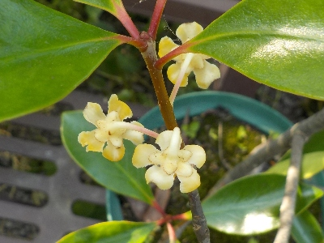
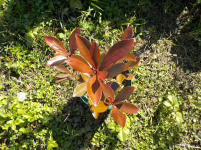
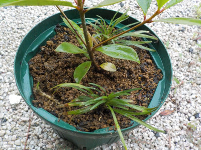
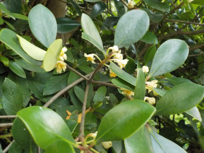
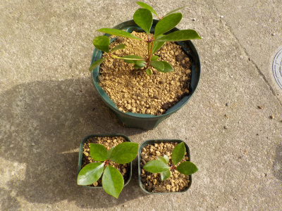
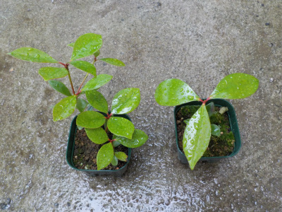
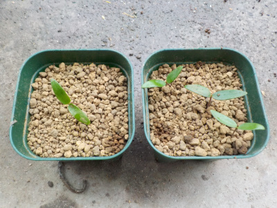
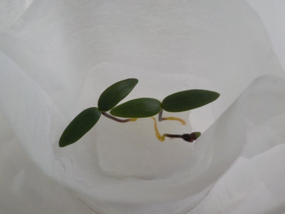
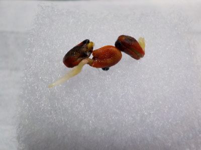
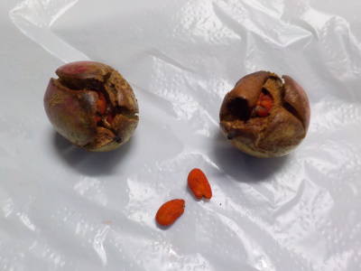

遊びで植物を育てよう
2025/07/05
植木鉢のモッコクに花が付きました。

花が小さいし下向きに咲いているので全然目立たないですが、花が咲いたのはうれしいです。
これで実が出来るともっとうれしいな。
【モッコクTOP】
【木TOP】
【園芸TOP】
2021/11/07
モッコクの葉が赤くなりました。

モッコクは紅葉しないと思うんですが、紅葉したみたいに赤くなりました。
他にも何本かモッコクがあるんですが、赤くなったのはこの1本だけです。
病気じゃないといいんですが。
【モッコクTOP】
【木TOP】
【園芸TOP】
2021/08/13
モッコクの鉢にリュウノヒゲを植えました。

何か植えてあったほうが賑やかでいいかなと、リュウノヒゲを植えました。
後々邪魔になるかもしれないですが、邪魔になったら取ればいいです。
どれくらいで鉢いっぱいに広がるでしょうね。
【モッコクTOP】
【木TOP】
【園芸TOP】
2021/07/11
モッコクの花が咲いていました。

派手ではないですが花があるのはいいですね。
【モッコクTOP】
【木TOP】
【園芸TOP】
2021/05/23
3本まつめて植えていたモッコクを別々にしました。

庭木にするつもりはないので大きくはしないですが、もうちょっと大きくなって欲しいので鉢を分けました。
1メートル以下で育てたいです。
【モッコクTOP】
【木TOP】
【園芸TOP】
2021/05/15
モッコクは木が小さくても葉っぱが大きい。

あんまり成長していないモッコクですが、大きさのわりに葉っぱが大きい。
なんかバランスが悪いです。
小さい鉢で小さく育てようと思っていましたが、もうちょっと大きい方がいいかなと最近思うようになりました。
今度大きな鉢に植替えしようと思います。
【モッコクTOP】
【木TOP】
【園芸TOP】
2020/04/12
モッコクを土に植え替えしました。

お茶パックで育てていたモッコクを土に植え替えしました。
【モッコクTOP】
【木TOP】
【園芸TOP】
2020/02/15
モッコクの芽は木っぽいです。

モッコクの芽は緑色が濃く、草って感じじゃなく木っぽいです。
なんとなく固そう。
【モッコクTOP】
【木TOP】
【園芸TOP】
2020/01/26
モッコクの種から根が出ました。

3つ種から根が出ました。
なんか弱々しい感じです。
【モッコクTOP】
【木TOP】
【園芸TOP】
2019/11/30
庭木のモッコクから種を採りました。

モッコクに熟れた実が沢山付いてました。
実が割れて種が飛び出す時期のようです。
種を蒔いて育てようと思います。
【モッコクTOP】
【木TOP】
【園芸TOP】
種から木を育てます。
【おいしいものを食べよう。】【たくさん寝よう。】
【ソロ活をしよう!】【季節感のあることをしよう。】【動画視聴はほどほどに。】【当サイトの全てのコンテンツは無断転載禁止です。】